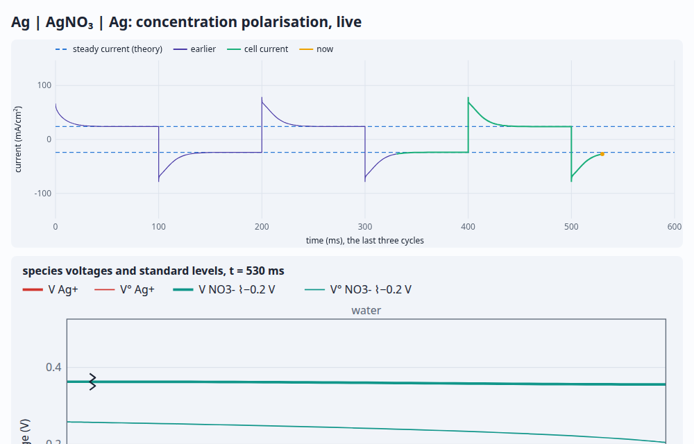

driftlet demos
Each page builds its device with driftlet/kit, solves it in your browser, and redraws as you move
the controls. The level diagram is the centrepiece: species voltages, band edges, Fermi and redox levels,
across the device. Every page shows its whole script at the bottom, as a worked example to copy.
Semiconductors

pn junctionQuasi-Fermi levels and band edges under bias; the I–V curve.

Solar cellPhotogeneration from a photon reservoir: J–V, Voc, fill factor, and the split quasi-Fermi levels.

MOS capacitorAccumulation, depletion and inversion under a metal gate; the low-frequency C–V curve.
Electrochemistry

Cyclic voltammetryFe³⁺/Fe²⁺ at platinum: the Fermi level against the couple's redox level, Butler–Volmer kinetics and diffusion.

Daniell cellZn | Zn²⁺ ‖ Cu²⁺ | Cu discharging through a load, and where its voltage goes.

Concentration polarisationAg | AgNO₃ | Ag under a square wave: the salt piling up and reversing, live; the impedance against theory.